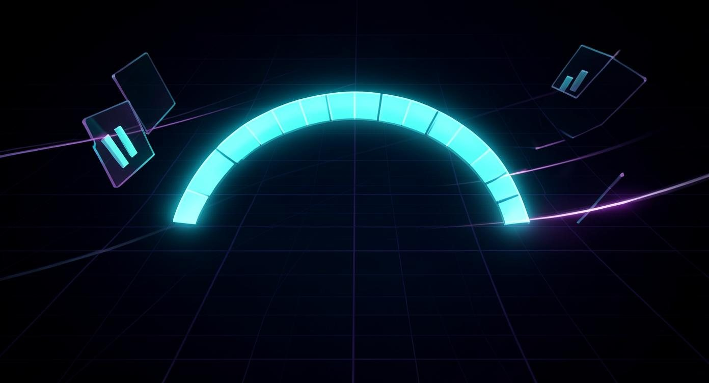
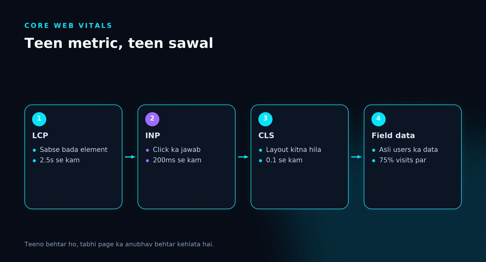
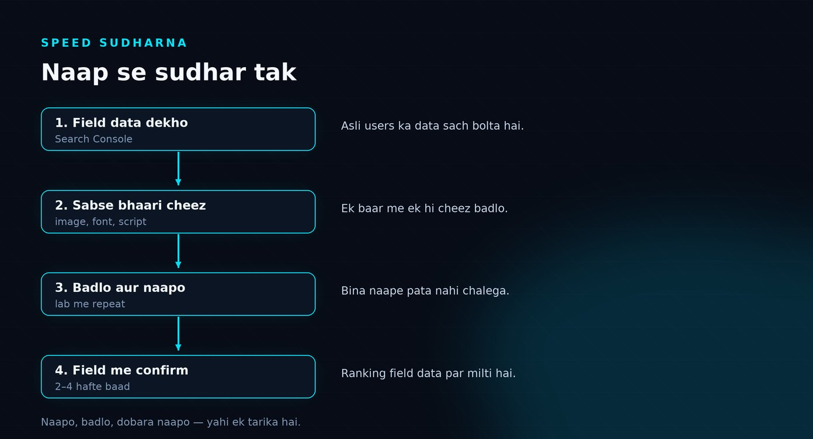

Core Web Vitals: LCP, INP aur CLS ko Kaise Sudharein

आपकी site तेज़ लगती है क्योंकि आपके laptop पर और आपके office के WiFi पर तेज़ है। पर जब कोई user पुराने Android फ़ोन और 4G पर खोलता है, तो वही page छह सेकंड लेता है — और वह चला जाता है। Google ने इसी अनुभव को नापने के लिए तीन metrics तय किए, जिन्हें Core Web Vitals कहते हैं। ये सिर्फ़ ranking factor नहीं हैं; ये सीधे बताते हैं कि user को site कैसी लगी।
इस guide में मैं तीनों metrics को अलग-अलग खोलूँगा — LCP क्या नापता है और 2.5 सेकंड की सीमा कहाँ से आई, INP किस चीज़ को पकड़ता है, CLS में layout क्यों हिलता है — और हर एक को सुधारने के practical steps. साथ में field और lab data का फर्क, tools, और भारत जैसे market में mobile-first सोच क्यों ज़रूरी है।
छोटा जवाब: Core Web Vitals तीन metrics हैं — LCP (सबसे बड़ा element कितनी जल्दी दिखा, target 2.5 सेकंड), INP (click पर page कितनी जल्दी जवाब देता है, target 200 मिलीसेकंड) और CLS (page load के दौरान layout कितना हिला, target 0.1 से कम)। तीनों असली users के data पर नापे जाते हैं, और तीनों को code, images और third-party scripts से सुधारा जा सकता है।
Teen metrics, teen sawal
हर metric user के एक अलग सवाल का जवाब देता है। LCP कहता है "क्या मुझे कुछ दिखा?" INP कहता है "जब मैंने कुछ किया, क्या site ने सुना?" CLS कहता है "क्या पढ़ते समय चीज़ें इधर-उधर कूदीं?" तीनों मिलकर वह अनुभव बनाते हैं जिसे लोग "site अच्छी है" या "site बेकार है" कहकर याद रखते हैं।

| Metric | क्या नापता है | अच्छा | सुधार चाहिए |
|---|---|---|---|
| LCP | सबसे बड़ा element दिखने का समय | ≤ 2.5s | > 4s |
| INP | Interaction का जवाब | ≤ 200ms | > 500ms |
| CLS | Layout shift | ≤ 0.1 | > 0.25 |
ध्यान दें कि बीच का हिस्सा भी है — 2.5 से 4 सेकंड के बीच "improvement needed" माना जाता है। Google का लक्ष्य है कि 75% visits पर ये numbers अच्छे हों, क्योंकि औसत से काम नहीं चलता; धीमे users भी गिने जाते हैं।
LCP: sabse bada element kitni jaldi aaya
LCP (Largest Contentful Paint) उस सबसे बड़े element का समय है जो viewport में दिखता है — आम तौर पर hero image, बड़ा heading या video poster. यह 2.5 सेकंड के अंदर होना चाहिए।
LCP चार चीज़ों से बिगड़ता है। पहला — server का धीमा जवाब; अगर HTML ही 2 सेकंड में आए, तो बाकी सब बाद में होगा। दूसरा — धीमा resource; जैसे 2 MB की hero image. तीसरा — render blocking; बड़ी CSS या JavaScript files जो पहले load होती हैं। चौथा — client-side rendering; जहाँ content JavaScript चलने के बाद बनता है।
सबसे तेज़ सुधार अक्सर image से आता है। hero image को WebP या AVIF में बदलें, सही size दें (srcset से), और उसे loading="eager" तथा fetchpriority="high" दें। बाकी सारी images loading="lazy" रखें। इस एक बदलाव से कई sites पर LCP आधा हो जाता है।
<img src="hero.avif"
alt="..." fetchpriority="high" decoding="async">दूसरा सुधार — HTML को server से जल्दी भेजें। Static site हो तो CDN से, और dynamic हो तो caching से। अगर आपका server हर request पर database से वही data लाता है, तो उसे 60 सेकंड cache करें; user को फर्क नहीं पड़ेगा और server का जवाब तेज़ हो जाएगा।
INP: click ka jawab kitni der me
INP (Interaction to Next Paint) नापता है कि user के किसी action — click, tap या key press — के बाद screen कितनी जल्दी बदली। 2024 में इसने FID की जगह ली, क्योंकि FID सिर्फ़ पहला input देखता था और INP पूरे session का सबसे खराब interaction पकड़ता है।
INP खराब होने का कारण लगभग हमेशा JavaScript होता है। जब user click करता है, browser को पहले चल रहा JavaScript खत्म करना पड़ता है, फिर event handler चलाना पड़ता है, फिर screen update करनी पड़ती है। अगर कोई script 300 मिलीसेकंड से ज़्यादा main thread पर कब्ज़ा किए है, तो click देर से दिखेगा।
तीन तरह से सुधार होता है। पहला — काम बाँटें: बड़े loop को छोटे हिस्सों में तोड़ें या setTimeout से yield करें। दूसरा — भारी काम हटाएँ: जो calculation हर render पर हो रही है, उसे एक बार करके cache करें। तीसरा — third-party scripts कम करें: chat widget, ads और analytics अक्सर सबसे बड़े गुनहगार होते हैं।
एक practical नियम — event handler में सिर्फ़ वही करें जो दिखाना ज़रूरी है; बाकी काम बाद में करें। जैसे search box में हर keypress पर पूरा list filter करने के बजाय 200 मिलीसेकंड का debounce लगाएँ।
CLS: layout kitna hila
CLS (Cumulative Layout Shift) नापता है कि page load के दौरान चीज़ें कितनी हिलीं। आपने वह अनुभव किया होगा — article पढ़ रहे हैं और अचानक एक ad आकर text को नीचे धकेल देता है, या button दबाने ही वाले थे कि वह खिसक जाता है।
CLS का सबसे बड़ा कारण है — ऐसी चीज़ें जिनका size पहले से तय नहीं है। Image बिना width और height के, iframe बिना fixed size के, या font जो बाद में load होकर text का size बदल देता है। हर बार जब कुछ add होता है और बाकी चीज़ें खिसकती हैं, score बढ़ता जाता है।
इलाज सीधा है। हर image और video पर width/height दें, ताकि browser पहले से जगह आरक्षित कर सके। Ads और embeds के लिए fixed container रखें। Fonts के लिए font-display: swap और एक मिलता-जुलता fallback font इस्तेमाल करें। और उन elements को नीचे न जोड़ें जो पहले से दिख रहे content को धकेलें — जैसे banner जो बाद में आता है।
img { aspect-ratio: 1392 / 752; height: auto; }
.ad-slot { min-height: 250px; }Field data aur lab data
यहाँ एक बात समझना ज़रूरी है जो कई लोग मिला देते हैं। Lab data एक controlled test है — Lighthouse आपके laptop पर page खोलकर नापता है। Field data असली users का data है, जो Chrome अपने पास anonymously भेजता है और जिसे CrUX (Chrome UX Report) कहते हैं।
दोनों अलग हो सकते हैं, और होते हैं। Lab में 1.5 सेकंड LCP आ सकता है, जबकि field में 3.5 — क्योंकि असली users के फ़ोन धीमे हैं, network कमज़ोर है और वे दूसरे देशों से आ रहे हैं। Google ranking में field data देखता है, इसलिए सिर्फ़ Lighthouse का हरा score काफ़ी नहीं है।
Field data देखने के लिए Search Console का Core Web Vitals report या PageSpeed Insights का top section देखें। वहाँ यह भी दिखता है कि कितने URLs प्रभावित हैं और किस metric में। 28 दिन का यह data धीरे बदलता है, इसलिए सुधार के बाद कुछ हफ़्ते इंतज़ार करना पड़ता है।
Das practical optimizations

- Images compress करें। WebP या AVIF, quality 80 के आसपास, और सही dimension. 2 MB की image को 150 KB में लाना आम है।
- Responsive images दें।
srcsetऔरsizesसे mobile को छोटी file भेजें। - Lazy loading लगाएँ। fold के नीचे की हर image और iframe पर
loading="lazy". - CSS और JS छोटा करें। Minify करें और जो code इस्तेमाल नहीं हो रहा, हटाएँ।
- Critical CSS inline करें। पहली screen का ज़रूरी CSS HTML में ही रखें, बाकी बाद में लोड करें।
- Fonts सीमित करें। दो weight से ज़्यादा न लें,
preloadदें औरfont-display: swapरखें। - Third-party scripts audit करें। जो tool काम का नहीं, हटाएँ; जो ज़रूरी है, उसे defer करें।
- CDN इस्तेमाल करें। Users के नज़दीक से files भेजें — भारत में यह फर्क साफ़ दिखता है।
- Caching headers सेट करें। Static assets पर लंबा
max-age, HTML पर छोटा। - Server response तेज़ करें। Database queries, caching और सही hosting — तीनों मिलकर TTFB घटाते हैं।
इनमें से पहले तीन अक्सर सबसे बड़ा फर्क डालते हैं, और सबसे आसान भी हैं। इसीलिए शुरुआत हमेशा images से करें — बाकी चीज़ों में मेहनत ज़्यादा और नतीजा कम होता है।
Napne ke tools
PageSpeed Insights एक ही page का lab और field data दोनों दिखाता है — सबसे पहला tool यही होना चाहिए। Search Console पूरी site का group-wise data देता है। Lighthouse local testing के लिए अच्छा है, खासकर बदलाव से पहले और बाद में तुलना के लिए।
असली users का data अपने ही code से नापना हो, तो web-vitals नाम की छोटी JavaScript library इस्तेमाल करें। यह तीनों metrics को browser से पढ़कर आपके analytics में भेज सकती है। इससे आपको अपने users का असली अनुभव दिखता है, औसत नहीं।
एक आदत जो बहुत काम आती है — हर बदलाव से पहले और बाद में एक ही page, एक ही network setting पर नापें। वरना पता नहीं चलेगा कि सुधार किस चीज़ से आया।
India ke context me kyun zaroori hai
भारत में बहुत बड़ी संख्या में users मध्यम दर्जे के Android फ़ोन पर हैं, जिनमें RAM कम और processor धीमा होता है। एक ही page जो iPhone पर 1.2 सेकंड में खुलता है, वहाँ 4 सेकंड ले सकता है। इसीलिए "मेरे फ़ोन पर तो तेज़ है" सबसे भरोसेमंद जाँच नहीं है।
असली test के लिए Chrome DevTools में network throttling "Slow 4G" और CPU throttling 4x चालू करें। फिर देखें कि LCP कहाँ जाता है। अगर वहाँ 4 सेकंड से ऊपर है, तो आपके बड़े हिस्से users को वही अनुभव मिल रहा है — चाहे आपके laptop पर सब ठीक दिखे।
Paanch common galtiyan
1. सिर्फ़ Lighthouse score देखना। Lab score हरा होना ज़रूरी है, पर field data असली सच है।
2. सारी images lazy करना। Hero image पर lazy लगाने से LCP बिगड़ता है; वह eager रहनी चाहिए।
3. Fonts की गिनती न देखना। चार-पाँच weights मिलकर सैकड़ों KB बन जाते हैं।
4. Ads और embeds को बिना size रखना। यही CLS का सबसे बड़ा कारण है।
5. एक साथ दस बदलाव करना। फिर पता नहीं चलता कि किससे फायदा हुआ और किससे नुकसान।
Mera anubhav
एक बार मैंने एक blog का Lighthouse score 98 कर दिया और सोचा कि काम हो गया। दो हफ़्ते बाद Search Console में देखा — mobile field data में LCP अभी भी 4.1 सेकंड था। कारण साफ़ था: मैंने अपने laptop पर test किया था, और असली users के फ़ोन धीमे थे।
फिर मैंने DevTools में 4x CPU throttling चालू की और वही page खोला। पहला बड़ा कारण मिला — एक 1.8 MB की hero image, जो मैंने "थोड़ी बड़ी है पर चलेगी" कहकर छोड़ दी थी। उसे WebP में 180 KB किया, और LCP 2.2 सेकंड पर आ गया। दूसरा कारण एक chat widget था जो 300 KB JavaScript ले रहा था और जिसे किसी ने इस्तेमाल नहीं किया। उसे हटाया, INP भी सुधर गया।
तीसरी सीख — CLS अक्सर सबसे आसान होता है और सबसे ज़्यादा नज़र आता है। मेरी site पर एक newsletter box बाद में load होता था और article को नीचे धकेल देता था। उसके लिए पहले से जगह आरक्षित की, और वह शिकायत खत्म हो गई।
नतीजा
Core Web Vitals तीन चीज़ें नापते हैं — LCP (2.5 सेकंड), INP (200 मिलीसेकंड) और CLS (0.1). पहले field data देखें, फिर lab में उसी समस्या को दोहराएँ, और एक-एक बदलाव करके नापें। Images, fonts और third-party scripts तीन जगहें हैं जहाँ सबसे ज़्यादा सुधार मिलता है — और भारत में mobile-first सोच के बिना कोई score भरोसेमंद नहीं।
आगे पढ़ें: internet कैसे काम करता है — जहाँ request के हर step का समय समझाया है, और web hosting — जहाँ server और CDN का फर्क है।
अक्सर पूछे जाने वाले सवाल
क्या Core Web Vitals ranking factor हैं?
हाँ, Google ने page experience signal में इन्हें शामिल किया है — पर content और relevance से ज़्यादा असर नहीं डालते।
LCP 2.5 सेकंड से कम करने का सबसे तेज़ तरीका?
Hero image का size घटाना और उसे priority से load करना — अक्सर सबसे बड़ा और सबसे आसान सुधार।
INP और FID में क्या फर्क है?
FID सिर्फ़ पहला input देखता था; INP पूरे session के सबसे धीमे interaction को नापता है, इसलिए ज़्यादा सही है।
CLS कितना होना चाहिए?
0.1 या उससे कम। 0.25 से ऊपर हो तो users को साफ़ परेशानी होती है।
क्या mobile और desktop के score अलग होते हैं?
हाँ। Google अलग-अलग नापता है, और mobile data अक्सर ज़्यादा खराब होता है।